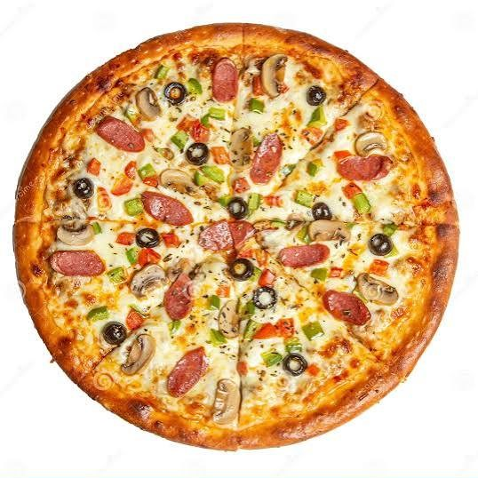

Odin Recipes
Home

Description
A classic pizza is a popular fast food item consisting of a flattened disk of dough topped with sauce, cheese, and various other ingredients.
Ingredients
- 1 pizza dough
- 1/2 cup pizza sauce
- 1 1/2 cups shredded mozzarella cheese
- 1/2 cup sliced pepperoni
- 1/4 cup sliced mushrooms
- 1/4 cup sliced bell peppers
- 1/4 cup sliced onions
- 1 teaspoon dried oregano
- 1 teaspoon dried basil
Steps to make a Pizza
- Preheat the oven to 245°C.
- Roll out the pizza dough on a floured surface to your desired thickness.
- Transfer the rolled-out dough to a pizza stone or baking sheet.
- Spread the pizza sauce evenly over the dough, leaving a small border around the edges.
- Sprinkle the shredded mozzarella cheese over the sauce.
- Add your desired toppings, such as pepperoni, mushrooms, bell peppers, and onions.
- Sprinkle dried oregano and basil over the toppings for added flavor.
- Bake in the preheated oven for 12-15 minutes, or until the crust is golden brown and the cheese is melted and bubbly.
- Remove from the oven and let it cool for a few minutes before slicing and serving.